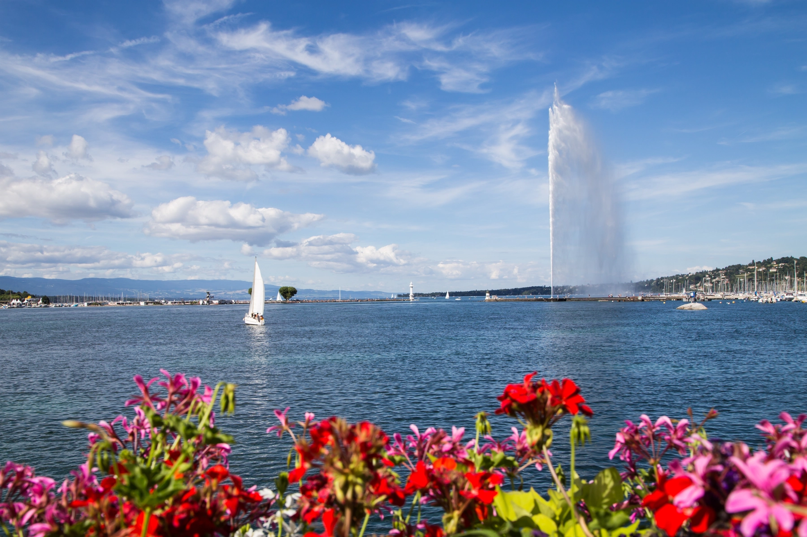
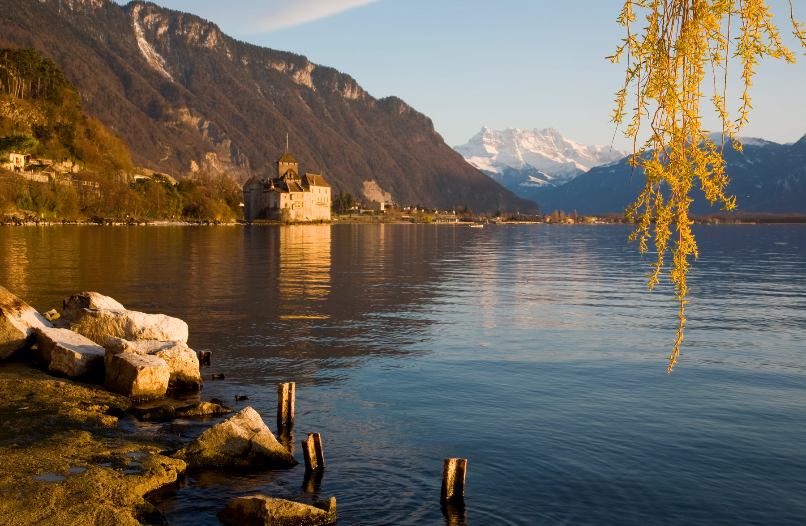
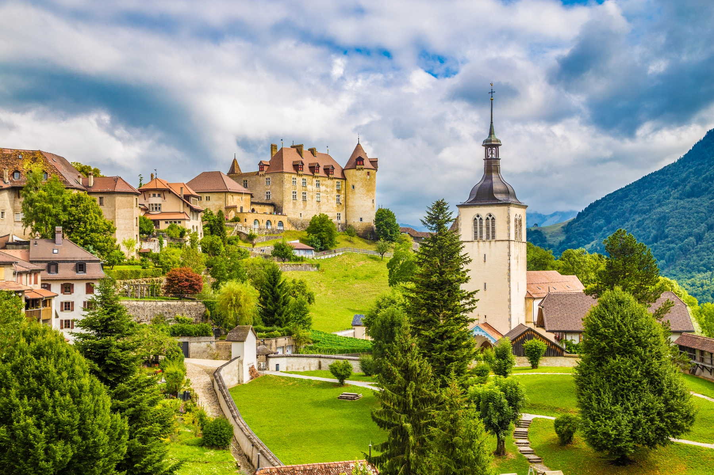
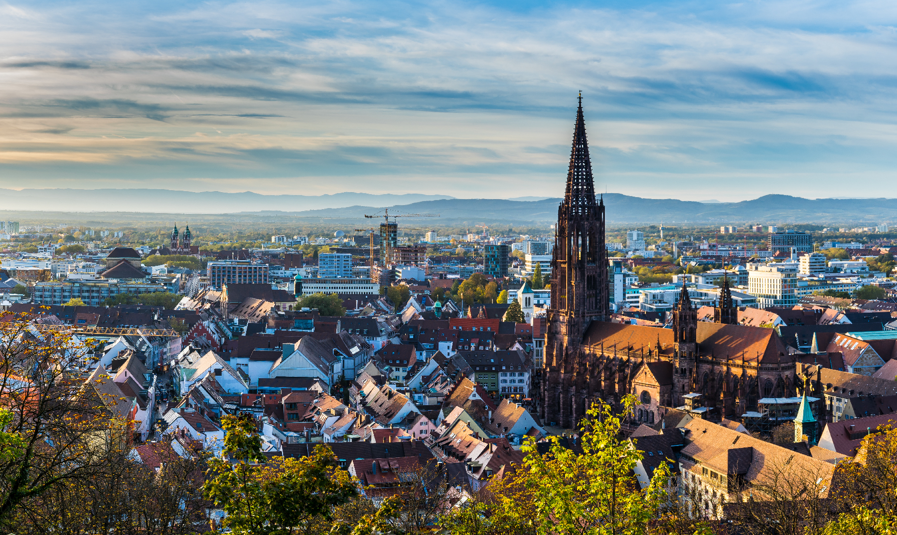
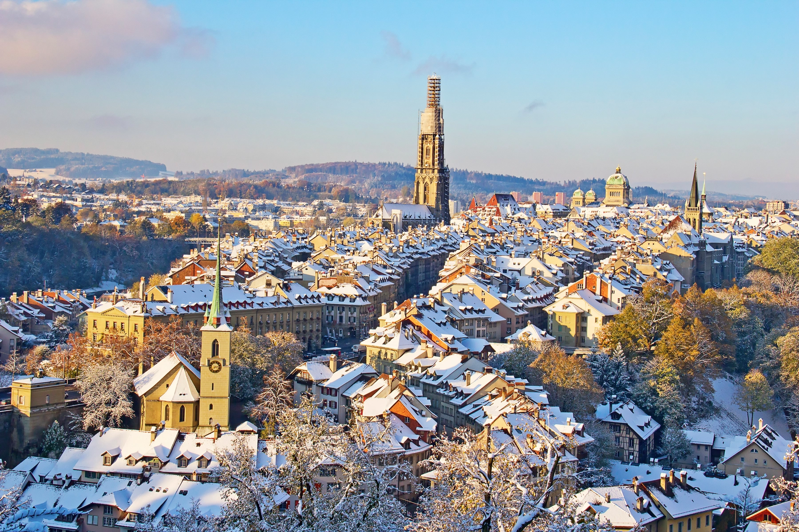
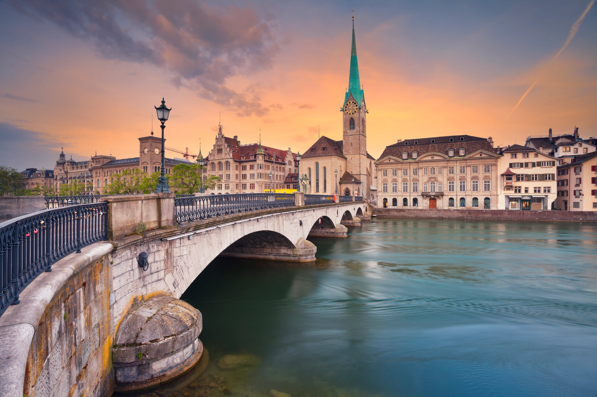
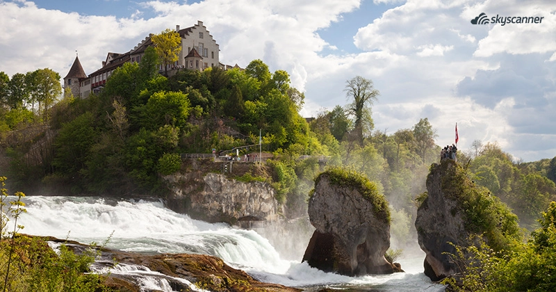
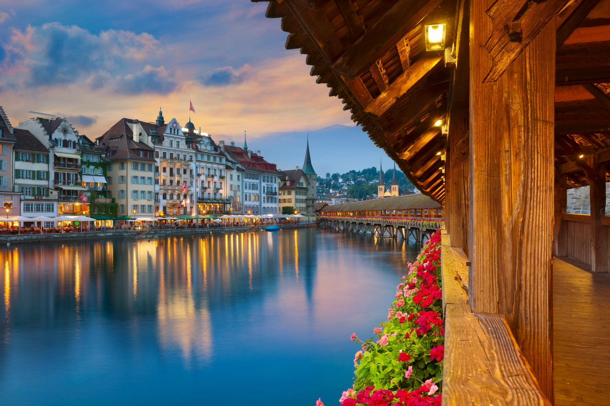
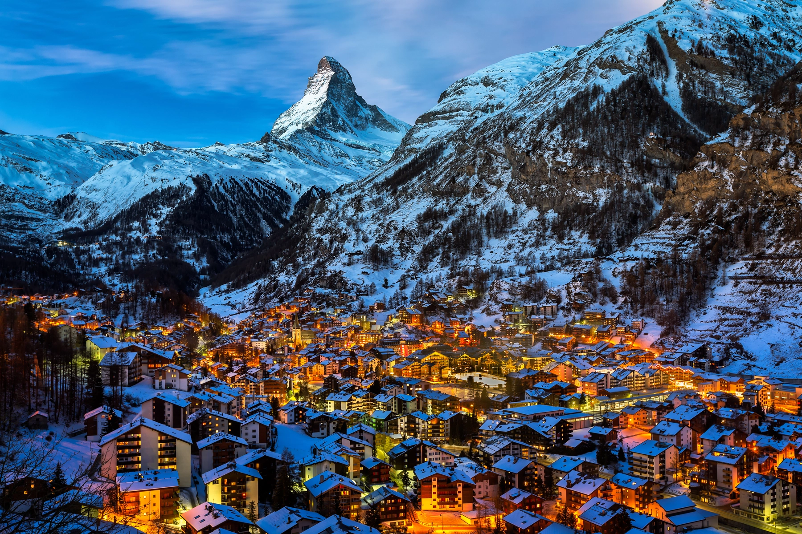
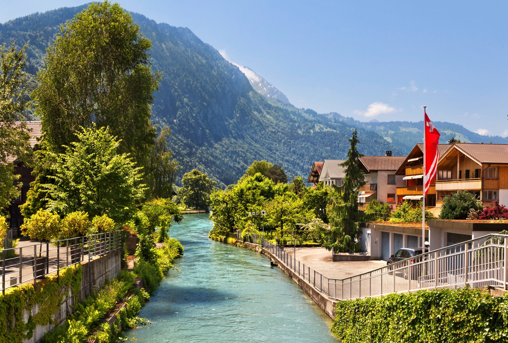

Ginebra es una de las ciudades más importantes de Suiza. Elegida como sede de las organizaciones internacionales más reconocidas a nivel mundial, como ser la FIFA, la ONU o la Cruz Roja, cuenta con varios rincones muy bonitos a orillas del lago Lemán.

También a orillas del lago Lemán, pero en el otro extremo, se encuentra el Castillo de Chillon, cuya construcción se remonta al medioevo. Esta fortaleza ha sido la inspiración de numerosos escritores y poetas, como Rousseau, Victor Hugo, Alejandro Dumas o Lord Byron.

Si vas a viajar a Suiza, no puedes dejar de pasar por Gruyères, que tiene un casco histórico medieval por el que no transitan autos. La joya del pueblo no es sólo el famoso queso que lleva el nombre del lugar (¡y que no hay que olvidarse de probar!), sino que es el Castillo cuyo interior se puede visitar y desde el cual se tienen unas preciosas vistas al valle.

Friburgo se ha alzado como uno de los mejores lugares que visitar en Suiza. Si bien la protagonista del pueblo es la Catedral de San Nicolás, una forma divertida de perderse por el casco histórico es a través de sus fuentes de origen medieval, como la de San Jorge, la de la Lealtad, la de la mujer Samaritana, la de la Valentía, la de Sansón, la de la Virgen María y unas cuantas más.

Situado en el corazón del casco histórico de Berna, el Zytglogge o torre del reloj era una de las puertas de entrada a la ciudad amurallada, dado que tenía una abertura por donde la gente podía entrar y salir. Además de su clara función de dar la hora, este reloj jugó un papel pasivo en la Teoría de la Relatividad de Albert Einstein, que vivía a pocos pasos de allí.

La Iglesia de la Abadía de Fraumünster, fundada en el siglo IX y cuyas vidrieras llevan el sello de Marc Chagall. A lo largo de su historia, no sólo ha conformado una de las postales más preciosas que hay que ver en Suiza, sino también ha sido de gran importancia en el desarrollo de la ciudad de Zúrich.

Al norte del país, casi en el límite con Alemania, se encuentra el pequeño pueblo de Schaffhausen (Escafusa en español). Merece la pena recorrer su casco histórico de fachadas renacentistas en el que destaca el Munot, una fortaleza del siglo XVI. Pero visitar las cataratas que se forman en el río Rin es una de las actividades que hacer en Suiza.

El puente de la Capilla es un puente de madera que atraviesa el río Reuss y une la parte vieja con la nueva de la ciudad de Lucerna. Junto a la Torre de Agua, constituye uno de los monumentos más fotografiados de Suiza. Ambos están en la ciudad desde casi su fundación y de hecho el puente es de los más antiguos de Europa.

Zermatt es una estación de esquí completamente equipada con hoteles y restaurantes de alto nivel. Si vas a alquilar auto para recorrer los mejores lugares de Suiza y tu intención es subir hasta allí a disfrutar del Monte Cervino (Matterhorn en alemán), muy conocido por aparecer en los envoltorios del chocolate Toblerone, recuerda que no es posible acceder con autos que usen combustible, sino que sólo se permite el acceso con coches eléctricos.

Interlaken es una ciudad que se encuentra entre dos preciosos lagos de aguas turquesas. Muchos se acercan hasta aquí porque quieren visitar el Jungfrau, una montaña de 4000 msnm que es Patrimonio de la Humanidad.